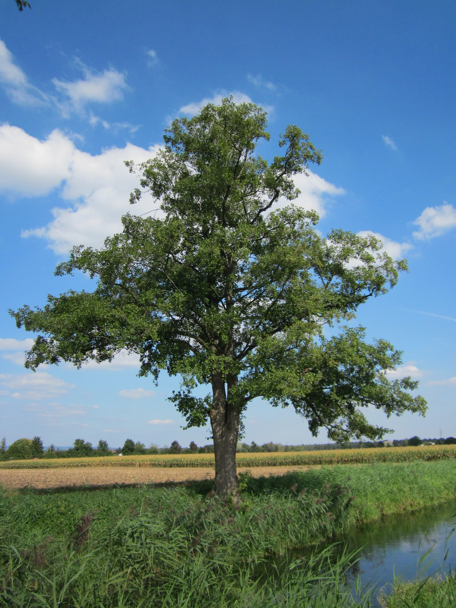

Alnus — Alder (Els)
The scrappy nitrogen fixer of the waterfront — colonising devastated ground, enriching the soil for allies, and hitting with surprisingly decent wood for a tree that usually dies before reaching a century.
Combat flavor
Short lifespan means Alnus is a fast, cheap-to-deploy frontline unit that enriches adjacent allies (nitrogen-fixing buff aura); its rot-resistant-when-wet wood suggests effectiveness in flooded terrain. Signature ability candidate: Soil Enrichment — passive aura that boosts growth speed of neighbouring tree units.
Real-world facts
Typical / max height20–30 m typical; max ~40 m (Alnus glutinosa)
Lifespan60–100 years typical; rarely beyond 100 — relatively short-lived
Wood~530 kg/m³ air-dry density; Janka ~650 lbf (2890 N) — soft hardwood, light, but historically prized for underwater use (Venice canal pilings, waterwheel paddles) because it resists rot when submerged
Growth speedFast (very fast in first 10 years, then slowing)
Ecology / notable traitsFixes atmospheric nitrogen via root symbiosis with Frankia bacteria (130–320 kg N/ha/year); pioneer species after fire, landslide, or logging; roots stabilise riverbanks; catkins release pollen extremely early in spring; wood turns orange-red when freshly cut; supports over 90 invertebrate species; thrives in waterlogged soils where competitors fail
Gallery
